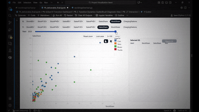

Tutorial: Transition Pressure Analysis
This tutorial demonstrates how to use the ScatterBrush diagnostic tool to analyze "transition pressure"—whether a region's EV fleet is growing faster or slower than its conventional fleet.

Configuration
Set the scatter plot axes as follows:
- X-axis: StockShare (%)
- Y-axis: SalesShare (%)
Interpretation
The y=x diagonal line is critical for this analysis. It represents the equilibrium point where the share of new EV sales exactly matches the existing EV share of the total fleet.
- Above the diagonal (Y > X): The share of new EV sales is higher than the current fleet's share. This indicates positive transition pressure, and the overall EV share of the fleet is actively growing.
- Below the diagonal (Y < X): The share of new EV sales is lower than the current fleet's share. This indicates negative pressure, meaning the EV fleet's growth is slower than the conventional fleet's.
Step-by-Step Analysis Examples
Think about some questions that our library can help you to answer.
Question 1: Which countries showed the fastest relative growth for cars and buses in 2021?
- Method:
- Move the time slider to 2021.
- Activate the 0-100 and x=y buttons.
- Identify the countries positioned furthest vertically from the diagonal line.
- Answer:
- Top 5 for Cars: Norway, Iceland, Sweden, Denmark, Finland.
- Top 5 for Buses: China, Netherlands, Finland, Sweden, Belgium.
Question 2: Were these countries always the fastest growers?
- Method:
- Select these top-performing countries on the 2021 plot.
- Lock the axes zoom by clicking the lock icon.
- Move the time slider back through previous years and observe their positions.
- Answer: No. For example, the Netherlands was an early adopter for cars but was overtaken by 2021. Some of the 2021 leaders were previously below the diagonal in earlier years, while other countries performed better. This shows that leadership in transition pressure can change rapidly.
Question 3: How did the adoption of vans and buses evolve for the earliest adopters?
- Method:
- Go to the year 2014.
- Use the legend to hide "Cars" and "Trucks".
- Zoom in on the area where
StockShareis just above 0.1%. - Select the visible points (early adopters for vans/buses).
- Lock the axes and move the time slider forward to 2023.
- Answer: In the early years (<2014), vans were growing faster. Buses were often below the diagonal, indicating their electrification was lagging. However, buses later overtook vans in terms of transition pressure, first in China (2014) and then in Europe. By the later years, buses showed much stronger acceleration, likely driven by public policy and municipal fleet renewals.